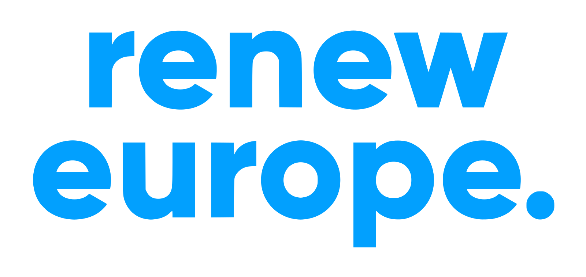
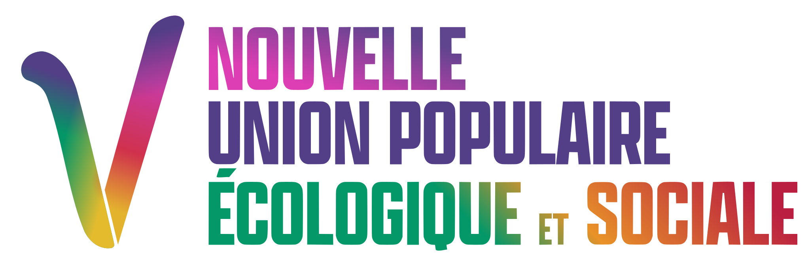

Partis Politiques



Ensemble, coalition attrape-tout néolibérale centriste comprenant :


La Nouvelle Union populaire écologique et sociale (NUPES), union de gauche comprenant :
La France Insoumise (LFI), socialisme démocratique
Le Parti Socialiste (PS), social-libéral
Europe Écologie Les Verts (EELV), union de tendances écologistes diverses
Le Parti Communiste Français (PCF)
Le Rassemblement National, national-conservateur (extrême-droite)
Les Républicains, néolibéral conservateur (droite)